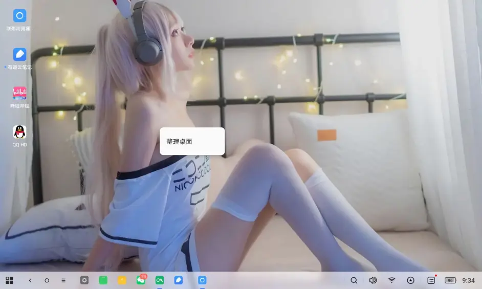
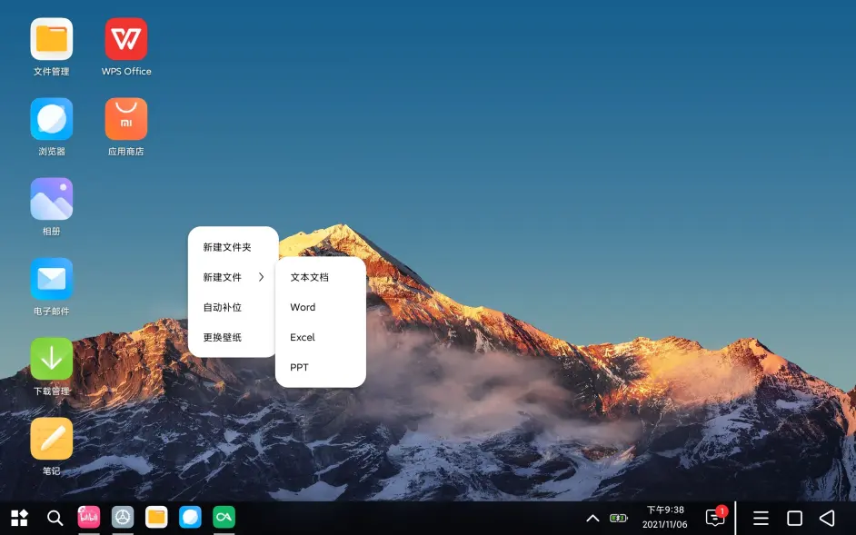

【迟到的对比】ZUI12.6 VS MIUI For Pad12.5
ZUI 已经发布第一个 13 版本了，但是由于 Pad Plus 是最后一个升级批次，且我应该会在升级 ZUI13 之前把 Plus 拔草，所以只能根据现在的系统、ZUI13 的体验贴和我之前的体验来写一篇对比贴。
需要注意的是，本文依旧只对比功能，不做性能对比。
省流版：半斤八两，都是半残。甚至对比之下，MIUI for Pad 更残废一些。
# 第一章：平板模式
1. 平行视界
ZUI12.6 的平行视界不能调整左右分栏大小。
MIUI For Pad 的平行世界可以。

ZUI 只能 1:1
MIUI 的平行视界可以自由分栏
2.ZUI Dock 栏可以放文件夹，MIUI For Pad 不可以。
可以放文件夹
3.ZUI 的桌面可以调节横竖排的图标数，MIUI For Pad 竟然这都不可以。
可以选几乘几
4. 全局小窗
MIUI 公测版终于更新了全局小窗。没有全局小窗的暂时可以用把所有应用添加到视频工具箱来解决。
ZUI12.6 的平板模式并没有全局小窗，默认只支持微信和 QQ 小窗。只能自己用米窗开。具体可以看我之前的图文。
ZUI13 的平板模式更新了全局小窗。打开逻辑和 EMUI 一致，操作逻辑和 MIUI 一致。

ZUI13 的小窗逻辑
5.ZUI 对平板还是做了一些特别的优化，比如外设模式。
高级功能
# 第二章：PC 模式
1.ZUI12.6 包含贴边自动二分屏，双击标题切换最大化和普通窗口，稳稳的 PC 操作手感。
虽然有 BUG，比如文件管理器的二分屏会少一块。
贴边左右分屏
MIUI For Pad 的 PC 模式甚至不支持二分屏，窗口调节大小，属实废物模式了。
MIUI 的 PC 模式小窗
2.ZUI12.6 的桌面残废，右键仅能排列图标，不能新建文件和文件夹。

右键菜单就一个整理桌面
MIUI For Pad 的 PC 模式可以在桌面创建文件夹，并且新建常用的文档文件格式。

右键新建常见格式
3.MIUI For Pad 的 PC 模式退出后会强制更换为三大金刚键，这是个严重 BUG。ZUI12.6 不会。
4.ZUI 的 PC 模式支持智能启动，MIUI For Pad 的只支持手动启动。
ZUI 自动打开电脑模式
5. 无论平板模式还是 PC 模式，ZUI 的鼠标始终是普通的箭头，这点在用 Krita 修图的时候很有用。右键虽然是返回，但是也不是残废。
而 MIUI For Pad 的是小圆点，干不了精细活。右键在平板模式下干脆没有用，只做了 PC 模式的适配。
# 第三章：其他 BUG
ZUI12.6 的比较常见的包括但不限于：
在连续播放一段时间视频后，视频 APP 会自动退出全屏。
图库里无论图片复制到哪个相册，都会提示不支持。
不知道这个图片库到底咋想的
ZUI12.6 根本锁不住后台，就算你开起了所有能开起的设置，后台还是会掉。这对于李跳跳，米窗，Rotation 一类 APP 简直是致命的。
MIUI For Pad 的常见 BUG 包括但不限于：
强制横屏根本强制不了大部分软件，甚至部分系统软件都不支持强制横屏。PC 模式下甚至打不开设置里的显示设置，打开就闪退。
综上，无论是 ZUI 还是 MIUI For Pad 都是半成品，相比之下 ZUI 的平板适配甚至做得更好一些，MIUI For Pad 的自带 APP，比如安全管家，相册，录音机功能更丰富一些。
由于个人原因，Pad Plus 就是我最后一部联想的产品了。也祝愿 ZUI13 能越做越好，给其他继续使用联想平板的小伙伴们更好的体验。
以后会更新更多安卓平板 / 小米平板 5Pro 的体验图文。喜欢的小伙伴可以点个关注。